Romanian Traffic Tutor (ROT)
Team Members
- Neagu Alexandru, A6
- Vamanu Petru Gabriel, A6
- Fiodorov Cristian, A4
Table of Contents
1. Introduction
1.1 Purpose
This SRS describes the general specifications for the Romanian Traffic Tutor application v1.0. We created this application during the Web Technologies course, in the fourth semester of University at the Faculty of Computer Science, Iași. Because the full project is not finished yet, this paper aims to describe the product scope, different characteristics and details regarding the user interfaces, and several application features. We will cover the back-end components of the application later, in an updated version of this documentation.
1.2 Document Conventions
- This document has been written following the IEEE System Requirements Specification Template
- This document respects the Scholarly HTML specification
- Citations are specified in italics
1.3 Intended Audience and Reading Suggestions
This document is intended for the laboratory teacher, who will be grading our product during the 8th and 17th weeks of the semester. For the evaluation during the 8th week, only the Product Scope, Overall Description, and User Interfaces sections are relevant.
1.4 Product Scope
The Romanian Traffic Tutor application aims to help those who are struggling to pass their driving license exam. All the laws from the Traffic Code are presented in an interactive way, making it easier for the users to learn. All the traffic signs are concisely presented in a separate section, with a lot of real examples. The users should be able to test their understanding by taking quizes, ordered by difficulty levels. A scoreboard to track the progress and performance should also be provided, both within the application and as a RSS feed.
1.5 References
- B. Sabin Corneliu. Course Page. Web Technologies 2023.
- V. Vlad. Laboratory Page. Web Technologies 2023.
- H. Rick. IEEE System Requirments Specification Template.
- About Scholarly HTML.
- Google Fonts
- Node.js Documentation
- Digital Ocean Cloud Storage
- Microsoft Azure Cloud Storage
- Docker
- OpenAPI specification
- nodemailer
- mongoose
- bcrypt
- azure/storage-blob
- formidable
- jsonwebtoken
- rss
2. Overall Description
2.1 Product Motivation
Driving is a crucial part of modern life, providing individuals the freedom to go where they want in relatively short time. However, driving comes with a lot of risks and dangers that can be minimized by knowing the laws and regulations of the traffic code. Unfortunately, there are drivers who don't know even the elementary rules in traffic, which can make them more likely to cause accidents or receive traffic violations. Additionally, attending driving school and passing the driving exam can be difficult for some people, as they may have trouble retaining the information they learn. This can lead to a sense of frustration and lack of confidence. To address these issues, we aim to create a modern application that teaches all the laws and signs from the traffic code in an interactive and engaging way. Our application will provide a variety of quizzes organized by difficulty levels, so that users can test their knowledge and improve their understanding of the traffic code. By doing so, we hope to make a positive impact in the society and help new drivers feel more confident and safe behind the wheel.
2.2 Product Functions
-
Login and Sign-up Features
- A login page where users introduce their username and password to enter the application
- An authentification page where users can create a new account in the application
-
Traffic Signs Features
- A page that contains multiple categories of traffic signs. All the categories are displayed on separated cards. The user can press on any card in order to enter a page that displays all the traffic signs related to the chosen category.
- A page that displays multiple traffic signs that are all corresponding to a specific category. All the traffic signs are displayed on separated cards. The user can press on any card in order to enter a page that displays relevant information about the chosen traffic sign.
- A page that displays relevant information about a specific traffic sign. All the rules, variations and real world examples regarding the traffic signs are concisely displayed on the screen.
- The application's logic regarding traffic signs is designed to be user-friendly for administrators. The admin has the ability to add a new traffic sign for a specific category, or a new category entirely. Also, the admin can edit or delete a specific traffic sign or category as well.
- For each specific traffic sign and sign category, the administrator might upload a photo that is relevant to the sign or category.
- The Traffic Signs and Traffic Signs Categories modules provide users the ability to export data in multiple formats. Users can export traffic sign data and traffic sign category data in either JSON or CSV format.
-
Practical Advices Features
- A page that contains multiple practical advices about driving. All the practical advices are displayed on separated cards. The user can press on a specific card in order to enter a page that presents the chosen advice.
- A page that presents a practical driving advice.
- The application's logic regarding practical advice is designed to be user-friendly for administrators. The admin has the ability to add, edit or delete a new practical advice.
- For each practical advice, the administrator might upload a photo that is relevant to the advice.
- The Practical Advice module provide users the ability to export data in multiple formats. Users can export traffic sign data and traffic sign category data in either JSON or CSV format.
-
Courses Features
- A page that contains several course categories. Each course is displayed on a separate card. The user can press on a specific card in order to enter a new page that displays the a list of available chapters for the selected course.
- A page that displays a list of chapters for a specific course. The user can press on a specific chapter in order to enter a presentation page.
- A page that presents a given chapter of the course. Several resourses such as images and citations might be included in the presentation.
- The application's logic regarding courses is designed to be user-friendly for administrators. The admin has the ability to add a new course, or a new chapter for a specific course. Also, the admin can edit or delete a specific course and chapter as well.
- For a given course chapter, the administrator can modify the chapter content as well. On the contents page, he has the ability to add a new page element that might be a subsection title, an entire paragraph or an uploaded-page.
- The Course Chapter module provide users the ability to export the course data in multiple formats. Users can export course data in either JSON or CSV format.
- There is also an Import as JSON feature on the page for administrators. An administrator can import / modify an entire course using this feature, by uploading a JSON file that contains the course data that follows the specified template. The template should be the same as the one provided by the Export as JSON feature.
-
Quizes Features
- A page that contains multiple exercise quizes. Only logged in users can access this page. Each exercise quiz is displayed on a separate card. The user can press one of the cards in order to start a desired quiz. The maximum score obtained for a given exercise quiz obtained by the user is displayed on the card.
- If the user wants to start a randomly generated quiz, in order to simulate an exam environment, he can do it as well by pressing a specific button on the page. For these type of quizes,
- A special page that displays the current question in a started quiz. The user can choose one or more options to answer the question for the question. After the submit button is pressed, the user might see if his answer is correct or not and jump to the next question.
- The application's logic regarding questions is designed to be user-friendly for administrators. The admin has the ability to add a new question, with the corresponding answer options.
-
Scoreboard Features
- A scoreboard page. All users are displayed on the scoreboard, in descending order of their total score. The total score is calculated by adding the results for each randomly generated quiz.
- Only the top 10 users that achived the highest scores are displayed on the scoreboard page. For consulting the whole scoreboard, there is a feature on the page that provides the ability to export the whole scoreboard as a RSS file.
2.3 User Classes and Characteristics
The application will be used by all the people who want to learn more about the traffic code and improve their driving skills.
2.4 Operating Environment
-
Hardware Platform
- Desktop
- Mobile
-
Browser
- Google Chrome
- Mozilla Firefox
- Microsoft Edge
- Apple Safari
2.5 Design and Implementation Constraints
The development of the Romanian Traffic Tutor app will have some constraints regarding the use of tools and frameworks. The grading policy prohibits the use of frontend or backend frameworks, and any tools used must have an open license. To comply with these constraints, the development team will rely on HTML5, CSS3, and Javascript for the interface, without using any frontend or backend frameworks. The team will also use Node.js for the backend, but without the use of web server frameworks like Express.
3. Application Architecture (C4 model)
3.1 Architecture Description
The application follows a client-server architecture, consisting of a REST-API server and a Client-Centric Web Application.
- On the server-side, the REST-API server is implemented in Node.js, utilizing the HTTP module to handle incoming requests and provide API endpoints. The server exposes several routes that allow for Create, Read, Update, and Delete (CRUD) operations on various entities, including courses, traffic signs, advice, quizzes, scoreboard, and authentication. Each API request is processed, and the server generates JSON responses that adhere to a specific format defined by the application. These responses consist of a status attribute indicating the success or failure of the operation, a data attribute containing the requested data or relevant information, and a message attribute providing additional details or error messages. This structured format ensures consistency and ease of parsing on the client-side.
- The application architecture includes a database layer powered by MongoDB, a non-relational database system, and Mongoose, a robust ODM library for MongoDB in Node.js. Within the REST-API server, the Mongoose library is utilized to define models that map to specific collections in the MongoDB database. These models define the schema, including the fields, data types, and validation rules for each entity such as courses, traffic signs, advice, quizzes, scoreboard, and user. Mongoose also provides convenient methods to perform CRUD operations on the database, simplifying the process of interacting with MongoDB
- On the client-side, the Web Application leverages the Fetch API to interact with the server and retrieve JSON responses. The application dynamically constructs web pages by utilizing JavaScript and DOM manipulation techniques. When a user performs an action, such as navigating to a specific page or submitting a form, the Web Application initiates a request using the Fetch API to the corresponding API endpoint on the server. Upon receiving the JSON response, the client-side JavaScript code processes the data and dynamically updates the web page's content, ensuring a seamless and interactive user experience. This Client-Centric approach enables efficient rendering of content on the client-side, reducing server load and providing a responsive user interface.
By combining the server-side REST-API implementation with the client-side Web Application built on JavaScript and DOM manipulation, the application achieves a robust and scalable architecture. The separation of concerns between the server and client components allows for independent development, maintenance, and scalability of each layer. This architecture fosters efficient communication between the server and client, facilitating seamless data exchange, dynamic page rendering, and a user-friendly interface.
3.2 Context Diagram
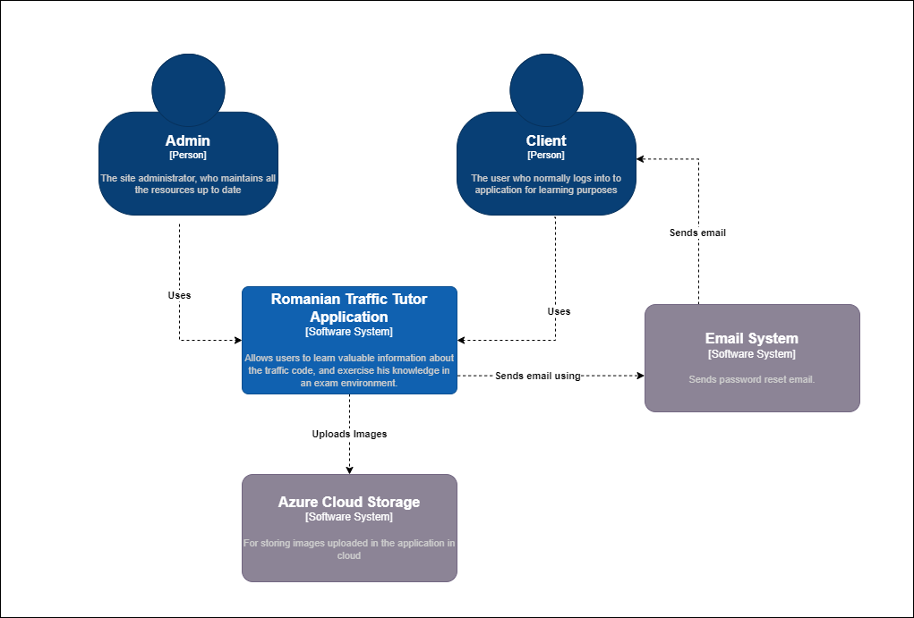
3.3 Containers Diagram

3.4 Components Diagram
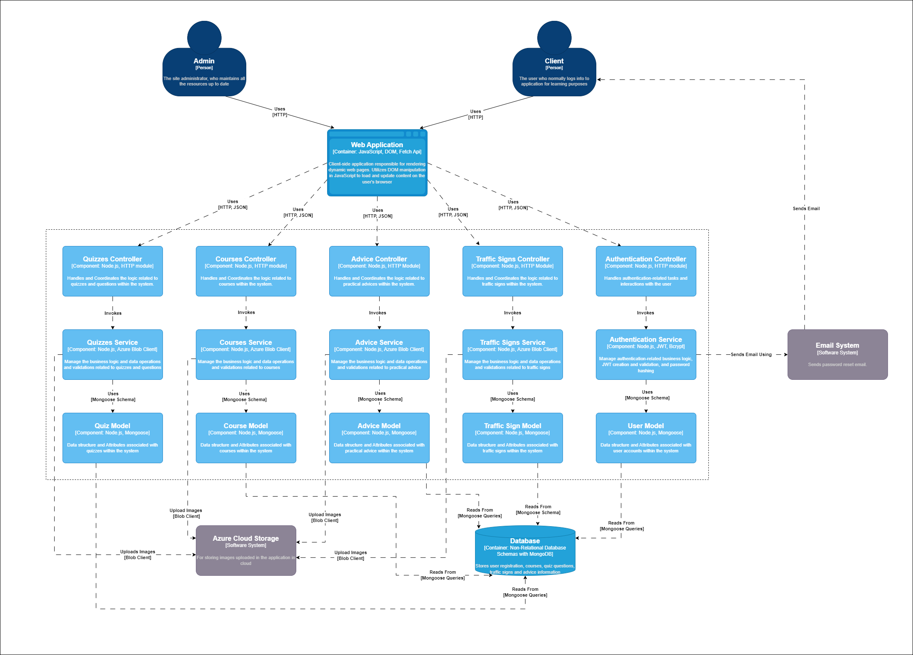
4. System features
4.1 Module Distribution
The web application has been organized into four distinct modules, each focusing on specific functionalities to ensure a modular and manageable system architecture. These modules provide clear separation of concerns, enabling easier development, maintenance, and scalability of the application.
- Authentication Module. The Authentication Module handles all aspects related to user authentication and authorization. It provides features such as user registration, login, password management, role management, and uses Json Web Token (JWT) for access control. This module ensures secure access to the application, safeguarding user data and protecting sensitive information by using the bcrypt library.
- Courses Module. The Courses Module is responsible for managing the courses, chapters and contents of a chapter in the application. It handles functionalities related to creating, updating, and organizing courses by the application administrator. Also, the normal users can view the courses and their contents.
- Traffic Signs and Advice Module. The Traffic Signs and Advice Module focuses on managing and presenting traffic sign information and practical advice to users. It provides features to retrieve relevant information about traffic signs and and safety guidelines. Also, the administrator can perform CRUD operation on each entity.
- Quizzes Module: The Quizzes Module enables the creation and administration of interactive quizzes within the application. It allows simple users to do exercise tests and exam simulations. Also the user's performance is tracked and a scoring formula is applied. Each user can see the score situations by consulting the scoreboard page.
4.2 Authentification Module
The authentification module is based on the following MongoDB User collection:
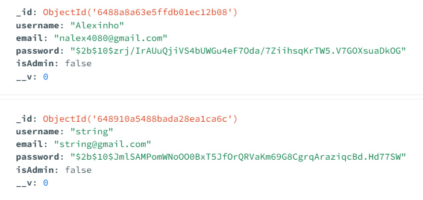As it can be observed from the image, the password is encrypted using the bcrypt library. Also, this module enforce the authorization of the API by using Json Web Token (JWT). On the Client Web Application, the JWT is stored in the localStorage and is sent to the server on each request as an authorization header.
4.3 Courses Module
The courses module is based on the following MongoDB collections:
-
Course collection
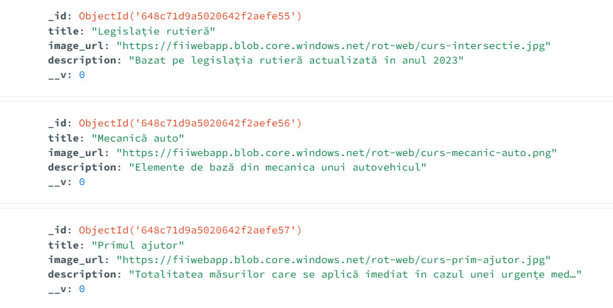 -
Chapter collection

-
Chapter-Content collection
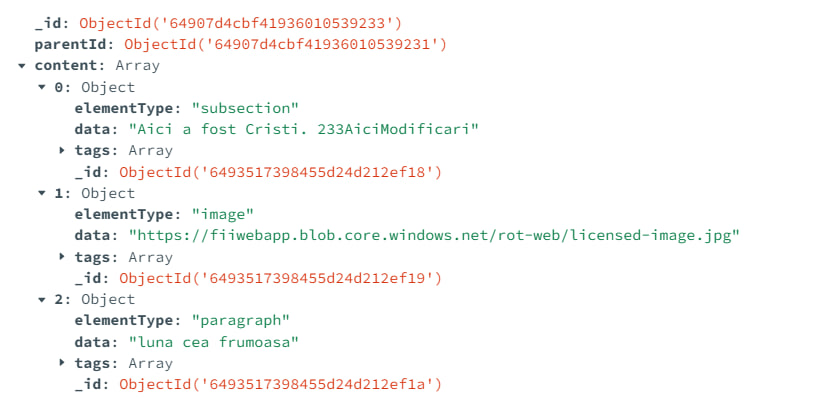
As it can be observed from the collections, the course might contain several chapters and each chapter contains a specific chapter content. The chapter content logic was designed as follows: Each element of the page might be of three types: paragraph, subsection or image. All of these elements are stored as an array in the content attribute. This array is then parsed by the client and the page is rendered accordingly. All this data might be exported by the normal user as a JSON or CSV file. Also, the administrator can import an entire content for a chapter from a local JSON file that should respect the template imposed by the Chapter-Content schema. All the CRUD operations are implemented both on server-side and client-side, and have each operation has a corresponding role permission.
Another important aspect is that the images are stored in cloud using Azure Cloud Storage. Thus, when the admin uploads an image for a course, it is stored in the cloud and the link is saved in the database.
4.4 Traffic Signs and Advice Module
The traffic signs and advice module is based on the following MongoDB collections:
-
Sign Category collection
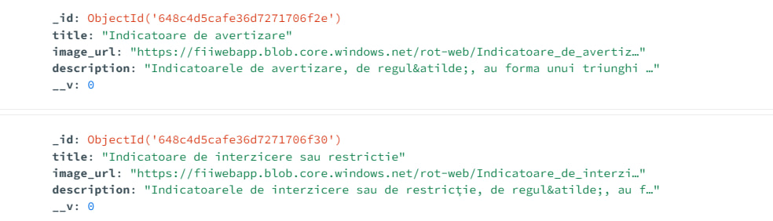 -
Sign collection
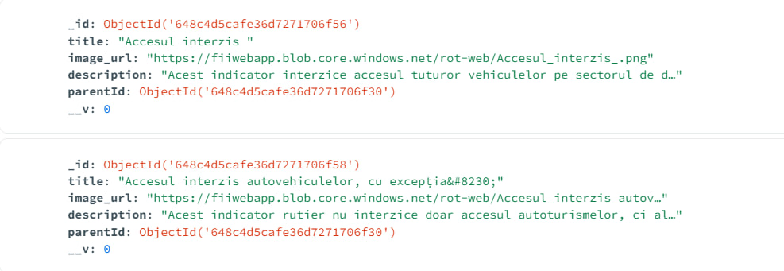 -
Advice collection
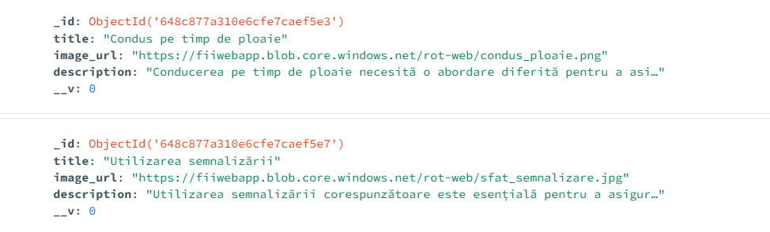
As it can be observed from the collections, a sign category may contain several traffic signs (mapped by the parentId attribute). Also, there is an advice collection that has a structure similar to that of a traffic sign. All this data might be exported by the normal user as a JSON or CSV file. All the CRUD operations regarding these entitites are implemented both on server-side and client-side, and have each operation has a corresponding role permission.
Another important aspect is that the images are stored in cloud using Azure Cloud Storage. Thus, when the administrator uploads an image for a traffic sign, a sign category or an advice, it is stored in the cloud and the links are saved in the database.
All the data regarding the sign categories and specific signs was extracted from scoalarutiera.ro using a Web Crawler. The crawler was implemented in Python using regular expressions and the urllib library. More details about the Web Crawler can be found on this GitHub repository.
4.5 Quizes Module
The quizes module is based on the following MongoDB collections:
-
Test collection
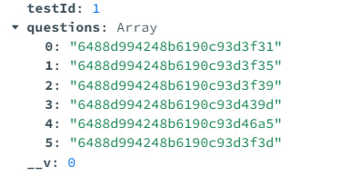 -
Question collection
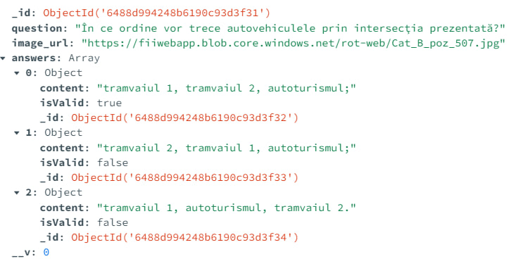
As it can be observed from the collections, each quiz contains an array of questions (each mapped by its ObjectId). Each question has three answer options, each having a flag representing wether the option is correct or not. An administrator has the ability to add a new question, that will have the chance to be part of a generated quiz.
Each question might have an image in it. Question images are stored in cloud using Azure Cloud Storage.
There are more than 800 questions stored in the database. All the questions were extracted from scoalarutiera.ro using a Web Crawler. As stated above, more details about the Web Crawler can be found on this GitHub repository.
4.6 API Documentation
We have also provided a comprehensive API documentation using the OpenAPI specification and Swagger. This documentation serves as a valuable resource for developers, enabling them to understand and interact with the available RESTful API endpoints exposed by the server.
Here is a photo of how the swagger user interface page looks like (only some endpoints):
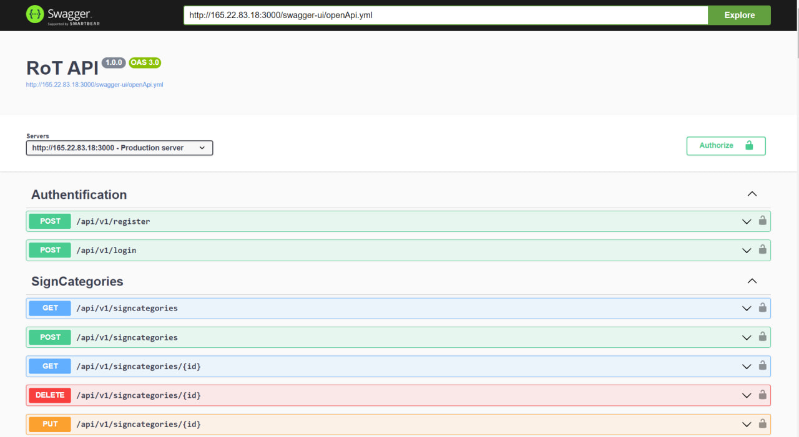The full OpenApi yaml specification file can be found here!
4.7 Application Deployment
Our application has been successfully deployed and made accessible to users on the internet.
- The server-side REST API, responsible for handling data requests and processing API endpoints, was deployed using a Docker image. To host the REST API, we utilized a DigitalOcean droplet. To access the deployed REST API, the following address might be used: http://165.22.83.18:3000/api/v1/endpoint.
- For the client-side application, in addition to the Docker image, we utilized NgNix for serving the web application. The application might be accessed at the following url: http://rot.romaniantrafictutor.tech
4.8 External Libraries
Our application uses the following node.js libraries
4.8.1 jsonwebtoken
We use this library in order to have a secure and efficient way to sign and verify JSON Web Tokens. Several important aspects regarding the application's security such as token authenticity and expiration are handled with the help of this library. One of the notable advantages of a Json Web Token is its stateless nature. It does not rely on server-side session state, all the the information needed being stored in the token itself.
4.8.2 bcrypt
This library provides a robust hashing algorithm that strengthens the security of stored passwords. It is used to hash the user's password before storing it in the database. In this way, we make sure that the user's personal data is confidential and protected, even in the case of a database breach.
4.8.3 mongoose
This library provides an intuitive way to interact with the MongoDB database. It simplifies the process of defining schemas for our collections, allowing us to establish a clear structure and enforce data consistency.
4.8.4 azure/storage-blob
This library provides an efficient way to interact with the Azure Cloud Storage. It allows us to upload and manage photos in an Azure Container. By using cloud services we allow efficient and secure management of the application's media assets.
4.8.5 formidable
This library provides an efficient way to handle image uploads. It excels at processing incoming multipart/form-data requests, making it a good choice for handling file uploads and form submissions.
4.8.6 nodemailer
This library offers a straightforward solution for sending emails from our application. It simplifies the process of sending password reset emails to an address given by the user.
4.8.7 rss
This library provides an accurate way to generate RSS feeds. It is extremely helpful when exporting the scoreboard as a RSS feed.
5. External Interface Requirements
5.1 User Interfaces
5.1.1 Landing Page
This page contains a navbar that is also present on every other page. The navbar contains seven different links, each one leading to different pages. The following pages might be accesed (in the same order) from the navbar: Landing Page, Courses Page, Traffic Signs Categories Page, Practical Advices Page, Quizes Page, Scoreboard Page and Login Page. Also, it's worth to mention that the page is perfectly responsive and the navbar transforms into an accordion. We used javascript to create such effects.
5.1.2 Sign-up Page
This page displays a form on the screen, where the user should fill all the given fields in order to create an account on the application. After the user successfully completed all the fields, he should click the button bellow in order to create the account. If the user already has an account he can press on the link Loghează-te to be redirected on the Login Page.

5.1.3 Login Page
This page displays a form on the screen, where the user should fill the username and password fields. After the user successfully completed the fields with the correct information, he will enter the application by clicking on the button below. A logged in user will have access to the quizes page and his progress will be displayed on the Scoreboard Page. If the user doesn't have an account, he can press on the link Înregistrează-te to be redirected on the Sign-up Page.
5.1.4 Courses Page
This page displays three cards on the screen. Each card corresponds to a course that has multiple chapters and detailed explanations for each chapter. The course-themes are the following: Legislation, Mechanics and First Aid in the exact same order. A hover effect was added for each card. If the user clicks on a card, he will be redirected to a Course Table Of Contents Page, specific for each type of course.
5.1.5 Course Table Of Contents
This page displays a list of available chapters for a specific course. Each chapter has it's own box on the screen and the user can click on one of them in order to choose a specific chapter. A hover effect was added for each box. All the boxes on the page are generated using javascript. If the user clicks on the box, he will further be redirected to the Chapter Presentation Page.
5.1.6 Chapter Presentation Page
This page displays specific information about a chosen course chapter. Several elements might be displayed on this page such as images, styled headings, block paragraphs and bolded text. On the bottom of the page there is a footer with three buttons. The leftmost and rightmost buttons redirects the user to the previous and next chapters. The middle button redirects the user back to the Course Table Of Contents Page.
5.1.7 Traffic Signs Categories Page
This page displays a multitude of cards on the screen. Each card corresponds to a specific category of traffic signs. A hover effect was added for each card. When the user clicks on a card he is redirected to the Traffic Signs Page.
5.1.8 Traffic Signs Page
This page displays a multitude of cards on the screen. Each card corresponds to a specific traffic sign. A hover effect was added for each card. When the user clicks on a card he is redirected to the Traffic Sign Presentation Page.
5.1.9 Traffic Sign Presentation Page
This page displays specific information about a chosen traffic sign displayed as a card. Important details about the sign such as rules, variations and real world examples are highlighted. The text on the card is scrollable, while the image always remains on top. There are three buttons at the buttom of the card. The leftmost and rightmost buttons redirects the user to the previous and next traffic signs. The middle button redirects the user back to the Traffic Signs Page.
5.1.10 Practical Advices Page
This page displays a multitude of cards on the screen. Each card corresponds to a different practical advice in traffic. A hover effect was added for each card. When the user clicks on a card he is redirected to the Advice Presentation Page.
5.1.11 Advice Presentation Page
This page displays specific information about a chosen practical advice displayed as a card. The text on the card is scrollable, while the image always remains on top. There are three buttons at the buttom of the card. The leftmost and rightmost buttons redirects the user to the previous and next traffic signs. The middle button redirects the user back to the Practical Advices Page.
5.1.12 Quizes Page
This page displays a multitude of cards on the screen. Each card corresponds to a specific quiz. The title of the quiz and the number of points obtained by the user are displayed on the card. When the user clicks on a card he is redirected to the Quiz Question Page.
5.1.13 Quiz Question Page
This page displays a question from a specific quiz. Each question is numbered and has three answer options. Optionally, a question might contain images. In order to submit the answer, the user should check the boxes corresponding to the options he considers to be correct and then he should press the submit button.
5.1.14 Scoreboard Page
The scoreboard page displayed all the users on the screen ordered decreasingly by their total score.